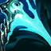
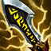

Tirador
Dificultad Moderada
HABILIDADES


PASIVA • MUNICIÓN HEXTECH
Un porcentaje del daño de los ataques básicos de Corki se convierte en daño mágico. Corki puede recolectar ocasionalmente El Paquete dentro de su base para recibir velocidad de movimiento y un lanzamiento potenciado de Valquiria.
1 • BOMBA FOSFÓRICA
Corki dispara una bomba luminosa a una ubicación objetivo e inflige daño mágico a los enemigos que estén en el área. Además, este ataque revelará unidades en el área mientras dure su efecto.
2 • VALQUIRIA
Corki vuela una distancia corta y suelta bombas que dejan un rastro de fuego que dañará a los oponentes que permanezcan sobre él. Entrega Especial: Si Corki tiene El Paquete, el vuelo es más largo, los enemigos son lanzados hacia un lado y la zona ralentiza e inflige daño.
3 • CAÑÓN DE REPETICIÓN
El cañón de repetición de Corki dispara rápidamente hacia adelante en forma de cono. Inflige daño y reduce la armadura y la resistencia mágica de los enemigos.
DEFINITIVA • DESCARGA DE MISILES
Corki dispara un misil en la dirección objetivo, el cual explota al impacto e inflige daño a los enemigos en un área. Corki acumula misiles progresivamente hasta llegar a un máximo. Cada tercer misil disparará un misil grande que inflige daño adicional.
CONFIGURACIÓN
OBJETOS
-

Saqueador de Esencias
3250+40 Daño de Ataque
+25% Tasa de Críticos
+20 Aceleración de Habilidad
FULGOR DE ESENCIA: Las habilidades activas que inflijan daño infligen 10 de daño físico adicional + 70% de Tasa de Críticos. Cada habilidad solo puede activar este efecto una vez por objetivo.
SIFÓN DE MANÁ: Los ataques restauran un 2% de tu Maná faltante al impacto. -

Espada de Carga Solari
3100+25% Tasa de Críticos
+30% Velocidad de Ataque
+15 Aceleración de Habilidad
RAYO SOLAR: Usar una habilidad acumula Resplandor (máx. 3 cargas) hasta por 10 seg. Al tener cargas acumuladas, obtiene un 25% de Tasa de Críticos. Los ataques que realizan golpes críticos usan una carga para infligir de 24 a 52 de daño mágico adicional al impacto, que aumenta hasta un 150% contra objetivos con poca vida.
Cada habilidad única solo puede generar una carga una vez cada 2 seg. -

Filo del Infinito
3400+55 Daño de Ataque
+25% Tasa de Críticos
INFINIDAD: Los golpes críticos infligen un 230% de daño en vez de 200%.
-

Báculo del Vacío
2800+70 Poder de Habilidad
DISOLVER: +40% de Penetración de Magia.
-

Ángel Guardián
3100+40 Daño de Ataque
+40 Armadura
RESUCITAR: Tras recibir daño letal, te restaura un 50% de la Vida básica y un 30% de Maná tras 4 seg de estasis. (210 seg de enfriamiento).
-

Grebas Glotonas
1000CALZADO: +40 de Velocidad de Movimiento.
SEGUNDOS: +8% de Vampirísmo Físico.
TERCEROS: +8% de Vampirísmo Mágico.
CARRERA (ACTIVA): Aumenta la Velocidad de Movimiento un 15% durante 3 seg. Infligir o recibir daño de campeones desactiva los efectos de Carrera. (60 seg de enfriamiento). -

Encantamiento de Estasis
800ESTASIS (ACTIVA): Te vuelves invulnerable e inalcanzable durante 2.5 seg, pero no puedes moverte, atacar, lanzar habilidades ni utilizar objetos. (120 seg de enfriamiento).
RUNAS Y HECHIZOS
-

Conquistador
Obtienes acumulaciones de fuerza adaptable al atacar a un campeón con habilidades o ataques separados. Se acumula hasta 5 veces. Al alcanzar el máximo de acumulaciones, inflige daño adaptable adicional a campeones.
POR ACUMULACIÓN: 2 - 6 de Daño de Ataque adicional o 3 - 9 de Poder de Habilidad durante 6 seg.
EFECTO ADICIONAL CON EL MÁXIMO DE ACUMULACIONES: Cuerpo a cuerpo: 10% | A distancia: 7% de daño adaptable adicional a campeones. -

Brutalidad
Obtienes 7 de Daño de Ataque y un 2% de Penetración de Armadura o 14 de Poder de Habilidad y un 2% de Penetración de Magia (adaptable).
-

Cazador: Titán
Obtienes 20 de Vida Máxima. Los derribos de campeones únicos otorgan 20 de Vida Máxima Y 4% de Tenacidad.
-

Dulces Frutos
Aumenta la curación de Frutamiel en un 25%. Cada vez que tú o un aliado cercano coma una Frutamiel, obtienes 20 de oro.
-

Barrera
ENFRIAMIENTO: 120 seg.
Obtienes un escudo que absorbe 115 de daño (115-465 basado en nivel) durante 2 seg. -

Destello
ENFRIAMIENTO: 150 seg.
Te teletransportas una distancia corta hacia delante o hacia la dirección objetivo.
CÓMO JUGAR CORKI
Corki es un campeón de mid-lane de daño mixto. Corki lucha al principio del juego, usa sus hechizos desde el principio para cultivar y empujar al enemigo antes de obtener tus 3 elementos principales. Una vez que obtenga sus 3 elementos básicos, se convertirá en un portador del juego tardío. Con Corki, asegúrese de estar atento cuando su Paquete (Pasivo) esté listo y disponible en la base. Cuando esté disponible, asegúrese de volver a la base y recogerlo. Esto le otorga a Corki velocidad de movimiento adicional y un lanzamiento de Valquiria potenciado (segunda habilidad).
Corki también se puede jugar en duo lane / adc. Con Corki adc, la estructura y el estilo de juego son los mismos que en el carril central, ya que Corki se beneficia mucho del daño de ataque y del juego pasivo.